UKRAA
About us
Origins
The UK Radio Astronomy Association was established in 2008 as a registered charity (registration no 1123866) in the United Kingdom. UKRAA’s objectives are to promote the science of radio astronomy and all branches of radio astronomical research. Prior to UKRAA’s formation, British Astronomical Association’s Radio Astronomy Group (RAG) members had designed and built working protypes of a VLF Receiver and Magnetometer. UKRAA was set up to handle the manufacture and sale of these products and the production of technical manuals covering the use of the products and the background science.
Not for profit
UKRAA is a not for profit business. Any surplus income funds the development of new products and our outreach activities. To keep our prices low UKRAA relies on the volunteers and Trustees giving their time.
Activities
Our primary activity is to supply equipment to amateur astronomers and other interested researchers. The design of new products and the manufacture of equipment for sale is all carried out by volunteers. To promote radio astronomy to amateur astronomers we give talks to local Astronomical Societies and amateur radio clubs and have provided support to schools and university departments on educational projects.
THE DETECTOR
Detecting muons from the comfort of your armchair
UKRAA is pleased to announce that the first batch of our new PicoMuon muon detectors will soon be available for sale on our website.
We will be launching the detector at AstroFest 2025, held at the Kensington Conference Centre, on 7th and 8th February 2025.
We will be introducing the finished device. This will be fully tested and provided with the operating software loaded.
As supplied, the detector will detect β-particles, ϒ-rays and cosmic muons.
The new detector uses two separated scintillator detectors to eliminate the random β-particles and ϒ-rays from cosmic muons.
All events (β-particles, ϒ-rays and cosmic muons) are output as a CSV file on a micro-SD card or to serial via USB connected to a PC
Full software is available to record, process and plot events and display on your local intranet using a Raspberry Pi4/5
For ongoing support, there is a user forum - where discussion, questions and ideas can be shared.
PicoMuon family
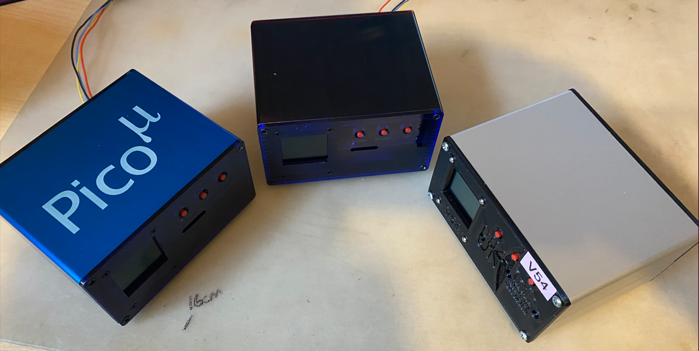Front view
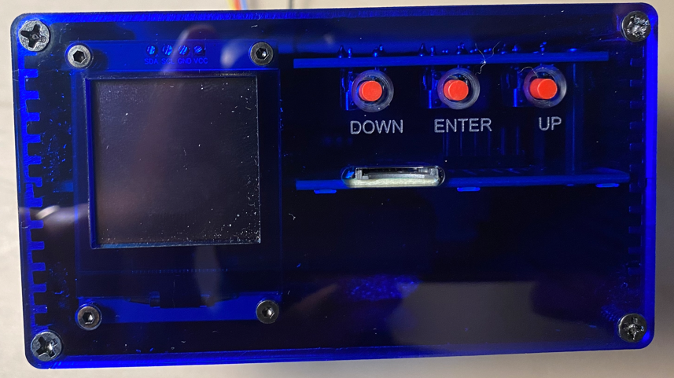Rear view
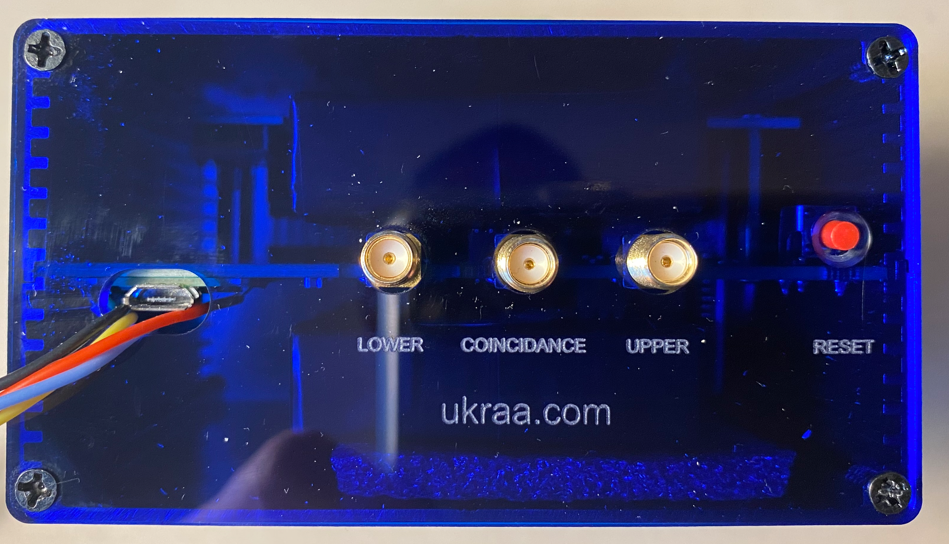MY DAILY RAW RESULTS
This data is from my PicoMuon detector
No accuracy is claimed for any published data
Top detector cpm
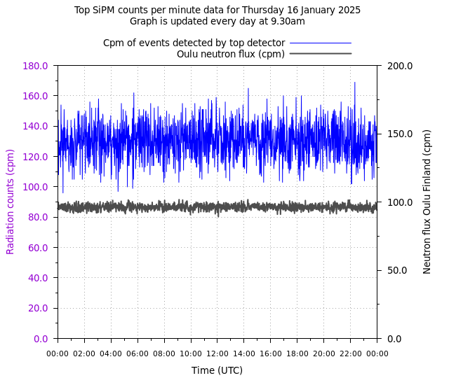Top detector cpm frequency
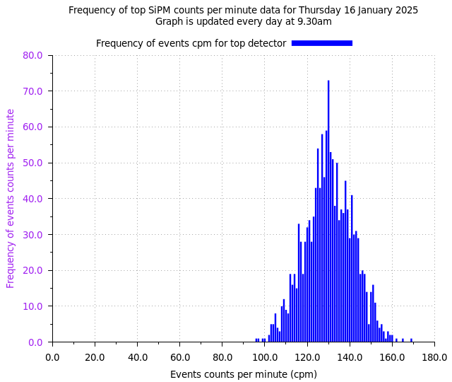Top detector adc frequency
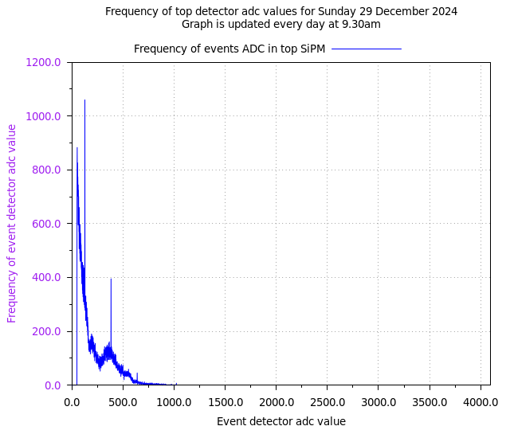Bottom detector cpm
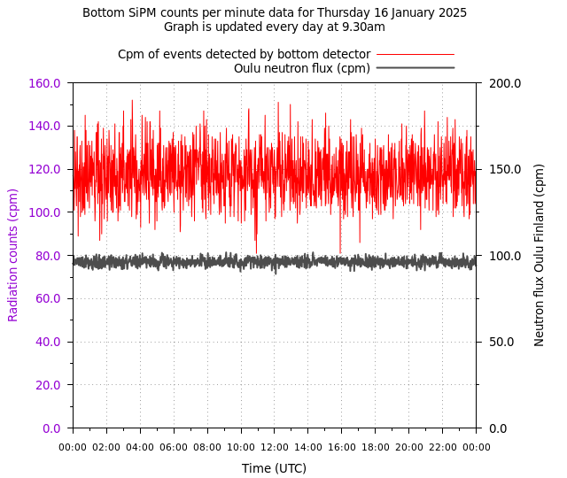Bottom detector cpm frequency
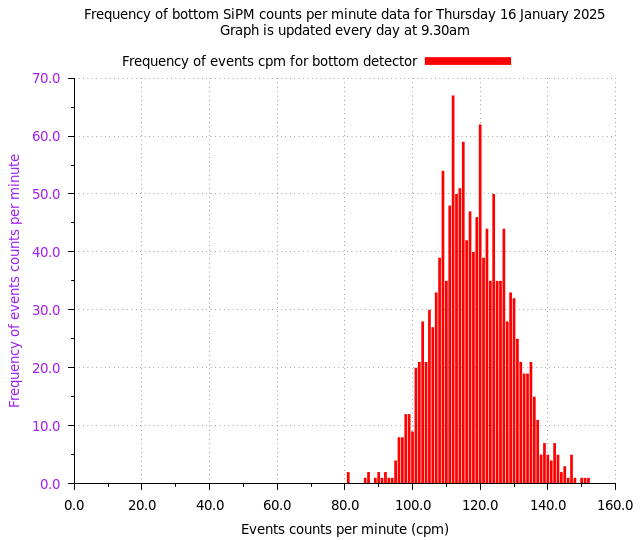Bottom detector adc frequency

Muons cpm
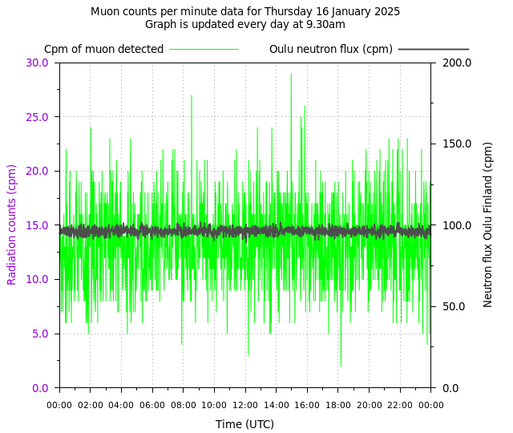Muons cpm frequency
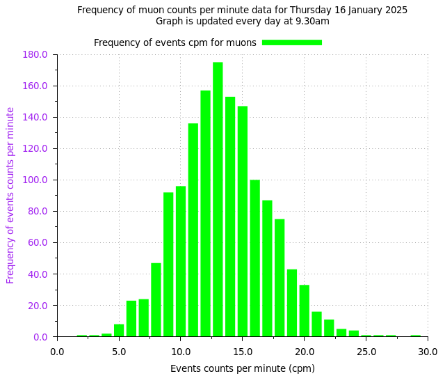Muons adc frequency
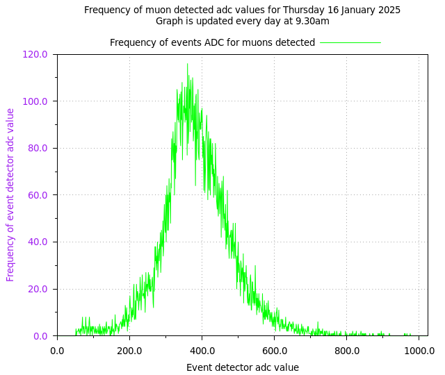MY DAILY % variation RESULTS
This data is from my PicoMuon detector
No accuracy is claimed for any published data
Muons counted for last day
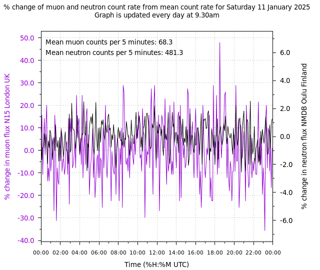We acknowledge the NMDB database (www.nmdb.eu) founded under the European Union's FP7 programme (contract no. 213007), and the PIs of individual neutron monitors at: Oulu (Sodankyla Geophysical Observatory of the University of Oulu, Finland)
MY WEEKLY % variation RESULTS
This data is from my PicoMuon detector
No accuracy is claimed for any published data
Muons counted for last 7 days
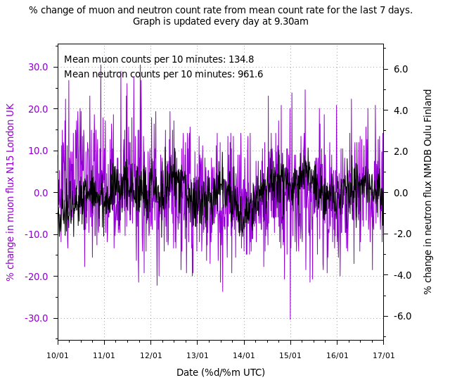We acknowledge the NMDB database (www.nmdb.eu) founded under the European Union's FP7 programme (contract no. 213007), and the PIs of individual neutron monitors at: Oulu (Sodankyla Geophysical Observatory of the University of Oulu, Finland)
MY MONTHLY % variation RESULTS
This data is from my PicoMuon detector
No accuracy is claimed for any published data
Muons counted for last 31 days

We acknowledge the NMDB database (www.nmdb.eu) founded under the European Union's FP7 programme (contract no. 213007), and the PIs of individual neutron monitors at: Oulu (Sodankyla Geophysical Observatory of the University of Oulu, Finland)